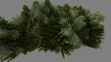
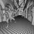
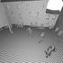

Projects that use Embree
This is an incomplete list of renderers that make use of Embree. If you use Embree and like your product to be listed here, please drop us a note.
OSPRay – A Ray Tracing based Rendering Engine for High-Fidelity Visualization
Brighter3D rendering plugin for SketchUp.
An Autodesk Maya 2014 viewport plugin is based on the Embree Example Renderer.
Embree Example Renderer The original Embree Example Renderer is no longer actively maintained. However, the OSPRay project contains a similar example of an Embree based pathtracer.
Embree Related Papers
STBVH: A Spatial-Temporal BVH for Efficient Multi-Segment Motion Blur
Sven Woop, Attila T. Afra, and Carsten Benthin
High Performance Graphics 2017
[pdf], [slides pdf]
{kind=link}
{kind=link}
{kind=link}
Improved Two-Level BVHs using Partial Re-Braiding
Carsten Benthin, Sven Woop, Ingo Wald, and Attila T. Afra
High Performance Graphics 2017
[pdf] , [slides pdf]

{kind=link}
{kind=link}
{kind=link}
Vectorized Production Path Tracing
Mark Lee, Brian Green, Feng Xie, and Eric Tabellion
High Performance Graphics 2017
[pdf]
Embree Ray Tracing Kernels: Overview and New Features
Attila T. Áfra, Ingo Wald, Carsten Benthin, and Sven Woop
SIGGRAPH 2016 Talk
[abstract pdf], [bib], [slides pdf]
{kind=link}
{kind=link}
{kind=link}
Local Shading Coherence Extraction for SIMD-Efficient Path Tracing on CPUs
Attila T. Áfra, Carsten Benthin, Ingo Wald, and Jacob Munkberg
High Performance Graphics 2016
[pdf], [bib], [slides pdf]
{kind=link}
{kind=link}
{kind=link}
Efficient Ray Tracing of Subdivision Surfaces using Tessellation Caching
Carsten Benthin, Sven Woop, Matthias Nießner, Kai Selgrad, and Ingo Wald
High Performance Graphics 2015
[pdf], [bib]
 
{kind=link}
{kind=link}
{kind=link}
{kind=link}
Exploiting Local Orientation Similarity for Efficient Ray Traversal of Hair and Fur
Sven Woop, Carsten Benthin, Ingo Wald, Gregory S. Johnson, and Eric Tabellion
High Performance Graphics 2014
[pdf], [bib], [pptx]
{kind=link}
{kind=link}
{kind=link}
{kind=link}
Embree: A Kernel Framework for Efficient CPU Ray Tracing
Ingo Wald, Sven Woop, Carsten Benthin, Gregory S. Johnson, and Manfred Ernst
ACM Transactions on Graphics (proceedings of ACM SIGGRAPH) 2014
[pdf], [bib], [slides pdf]
{kind=link}
{kind=link}
{kind=link}
{kind=link}
{kind=link}
{kind=link}
{kind=link}
Watertight Ray/Triangle Intersection
Sven Woop, Carsten Benthin, Ingo Wald
Journal of Computer Graphics Techniques (JCGT), Volume 2, Issue 1, pages 65–82, 2013.
[pdf], [bib]

{kind=link}
Combining Single and Packet-Ray Tracing for Arbitrary Ray Distributions on the Intel MIC Architecture
Carsten Benthin, Ingo Wald, Sven Woop, Manfred Ernst, William R. Mark
IEEE Transactions on Visualization and Computer Graphics, Volume 18, Issue 9, 2012
[pdf], [bib]
Fast Construction of SAH BVHs on the Intel Many Integrated Core (MIC) Architecture
Ingo Wald
IEEE Transactions on Visualization and Computer Graphics, 18(1), 2012, pages 47–57
[pdf]
Fast Distance Queries for Triangles, Lines, and Points using SSE Instructions
Evan Shellshear and Robin Ytterlid
Journal of Computer Graphics Techniques (JCGT), Volume 3, Issue 4, pages 86–110, 2014 [pdf]
IlluminationCut
Norbert Bus, Nabil H. Mustafa, and Venceslas Biri
Computer Graphics Forum (Proceedings of Eurographics 2015) 34 (2), 2015 [pdf]